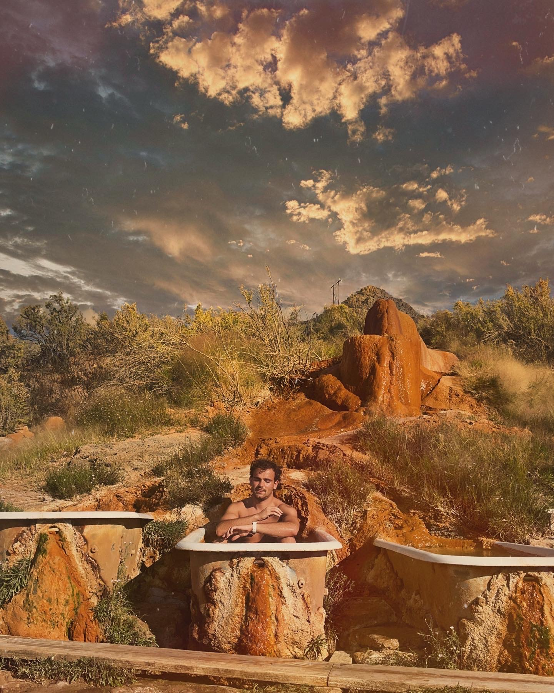

TRAVEL IDEAS & TIPS
ABOUT ME
HELLO! I am a 23 year old ultra marathon athlete, student and videographer. I make destination running videos with unique challenges, I also make travel content to unfimiliar and cool places in the western United States as well as international. I am from a small town in Idaho and have been doing videogrpahy since I was little!

